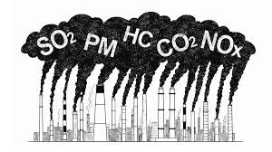
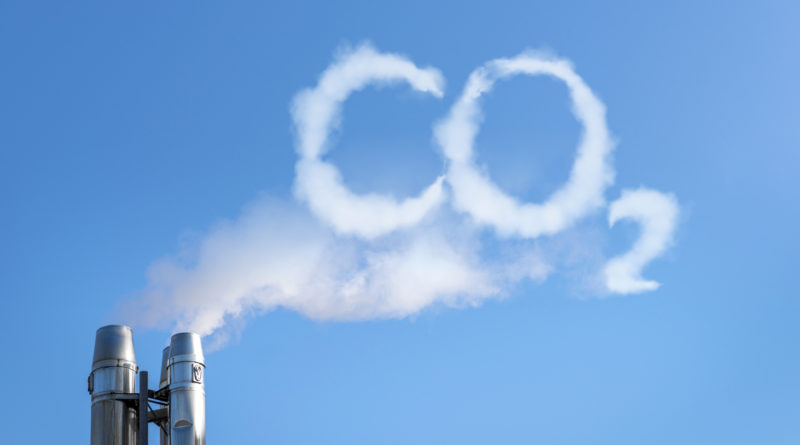
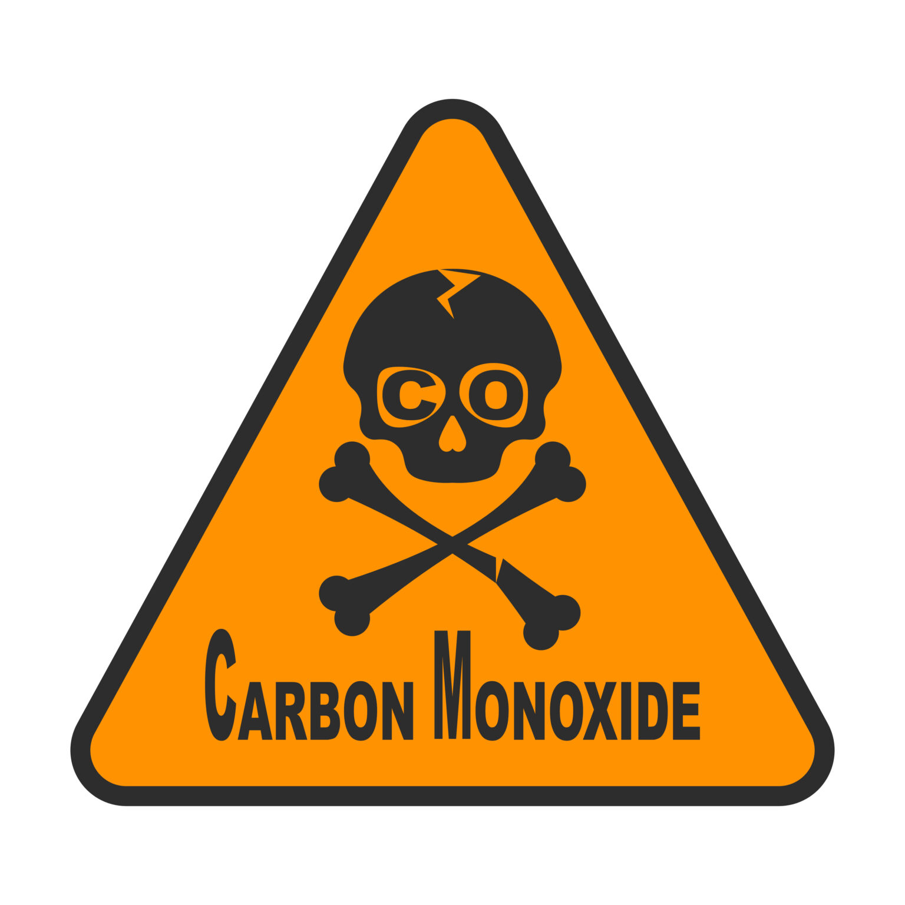
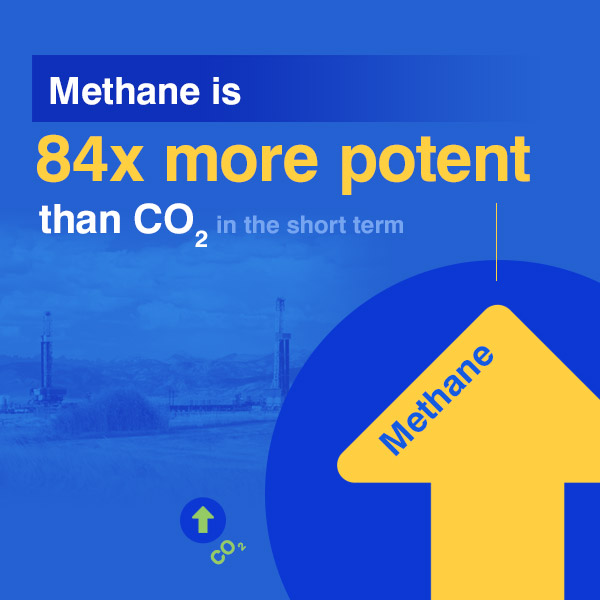
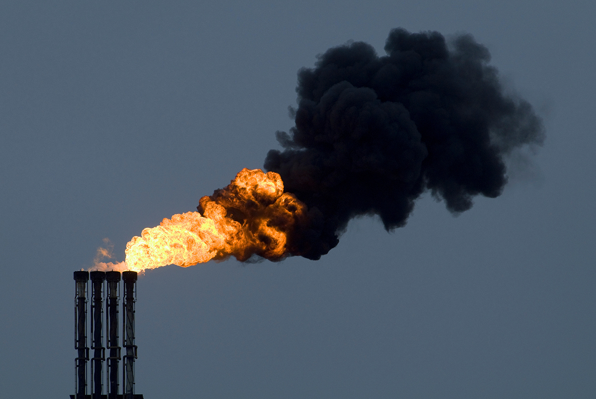
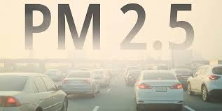
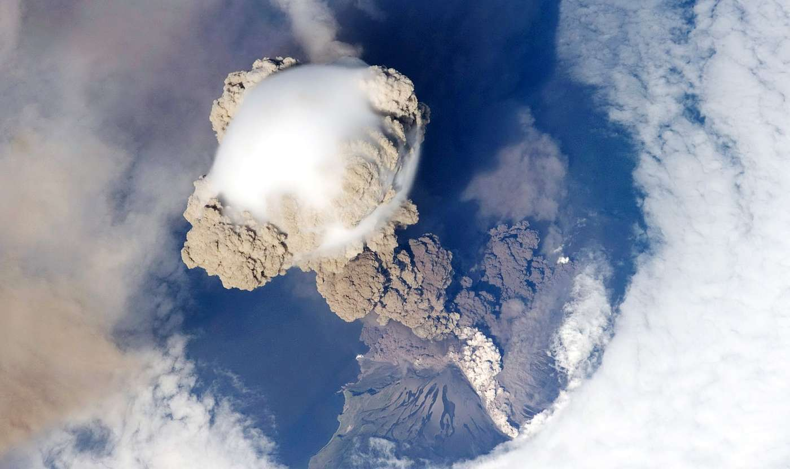

Climate change refers to long-term alterations in temperature, precipitation, wind patterns, and other elements of the Earth's climate system, primarily driven by human activities such as burning fossil fuels and deforestation. NASA's Earth Science Division plays a pivotal role in understanding and addressing this pressing global challenge, particularly as it relates to the rise of greenhouse gases (GHGs) in the atmosphere.
These gases play a vital role in climate change.

Click on the different gases which affect climate change to know facts!
(Please use a browser not html viewer for best results)
CO₂ - The Cause of Climate Change, Tracking, Monitoring
and Mitigating it:

➔ Carbon dioxide is the leading greenhouse gas driving climate change, accounting for
roughly 80% of U.S. greenhouse gas emissions from human activities. Most of it
originates from burning fossil fuels for energy and transportation, industrial processes,
and land-use changes. Tracking CO₂ emissions and understanding its movement
through natural systems is crucial for managing climate change.
➔ The air-sea CO₂ exchange: is vital to controlling atmospheric CO₂. Oceans act as a
natural carbon sink, absorbing about a quarter of human-emitted CO₂. However,
warming oceans reduce their ability to absorb CO₂, further accelerating climate
change. The ECCO-Darwin model helps scientists understand how ocean currents
and marine life, like plankton, influence CO₂ absorption. If this natural system
weakens, more CO₂ stays in the atmosphere, leading to faster warming.
➔ Tracking carbon flux: On land, the carbon flux (the movement of CO₂ between the air,
land, and oceans) is also important. Forests, soil, and plants naturally absorb CO₂, but
human activities, such as deforestation and fossil fuel burning, overwhelm this
process. MiCASA combines satellite and ground data to estimate how much CO₂ is
being absorbed or released by ecosystems. When nature can’t keep up with
emissions, CO₂ levels rise, contributing to more severe weather, like floods and
droughts.
➔ Fossil fuel combustion: Fossil fuel burning from power plants, vehicles, and factories
is the biggest source of CO₂ emissions. These emissions are causing more frequent
heatwaves, wildfires, and species loss. The ODIAC project maps global CO₂ emissions
from fossil fuels, while the Vulcan project tracks fossil fuel emissions in the U.S.
specifically. These tools help identify where the most CO₂ is coming from, helping
governments focus on reducing emissions from these sources.
➔ NASA’s OCO-2 satellite: measures CO₂ in the atmosphere with great precision,
showing where emissions are high and how much CO₂ is absorbed by forests and
oceans. This data helps scientists understand how CO₂ is causing rising temperatures,
melting glaciers, and more powerful storms.
➔ The GEOS model: combines CO₂ data with weather patterns to predict how climate
change will affect future rainfall, farming, and extreme weather. This model helps
prepare for how rising CO₂ will affect our world. The Model Intercomparison Project
(MIP) compares different climate models to improve accuracy, ensuring that
predictions about future CO₂ levels and climate impacts are reliable.
➔ CO₂ is the leading cause of climate change, and its effects are widespread—from
stronger storms to the loss of species. Tools like ECCO-Darwin, MiCASA, ODIAC,
Vulcan, and OCO-2 are helping scientists track CO₂, understand its effects, and find
ways to reduce emissions. These efforts are crucial for protecting the environment and
slowing down climate change
GRAPES System for CO Emission:

➔ Carbon monoxide (CO) is a colorless, odorless gas that is highly toxic to humans and animals, interfering with the blood's ability to transport oxygen.
Major sources of CO emissions include the incomplete combustion of fossil fuels from vehicles, industrial processes, and residential heating.
CO contributes to the formation of ground-level ozone, affecting overall air quality.
➔The Greenhouse gas and Air Pollutants Emissions System also called the
GRA²PES system is the project that helps in monitoring and managing
emissions of greenhouse gases like carbon dioxide(C02) and pollutants like
carbon monoxide (CO). It is a tool designed to track and analyze emissions of
gases that affect both the climate and air quality.
➔THE WORKING OF GRA²PES SYSTEM are as follows:
➔ DATA COLLECTION: GRA²PES collects data from various sectors, such as
energy production and uses information from sources like the U.S.
Energy Information Administration (EIA) which includes tracking how
much fuel is burned and where emissions come from across the country.
➔ CARBON MONOXIDE (CO): When fuel doesn’t burn completely a harmful
gas gets released, the gas is CO. It comes from vehicles and wildfires and
GRA²PES monitors the level of CO emissions to help the scientists and
policymakers with the information like what amount of CO is released
into the air, where it’s coming from and how it impacts both hum health
and the environment.
➔ MODELLING AND PREDICTIONS: GRA²PES doesn’t just collect data, it also
uses computer models to predict the emissions.
➔ IMPROVING ACCURACY: It combines data from different sources to
improve the accuracy of the information and in this way the system can
provide detailed maps showing how much CO gas and the other
pollutants have been released in different areas.
In short, we can conclude that GRA²PES is like a "detective" for greenhouse
gases and pollutants. It’s the best way for the scientist to figure out on how to
reduce those emissions for a cleaner, healthier planet
Methane Emissions' Role in Climate Change:

➔Methane (CH₄) is a colorless, odorless gas and the simplest hydrocarbon, consisting of one carbon atom and four hydrogen atoms. It is a potent greenhouse gas.
➔Methane is 25 times more effective than carbon dioxide in attracting heat into the
atmosphere over a 100 year period. It’s concentration in the atmosphere has increased
significantly since the industrial revolution, contributing to the climate change.
➔Tracking methane levels in the atmosphere helps scientists to understand the climate
dynamics and develop strategies to mitigate it’s impact. Reducing the methane emissions
is considered to be one of the most efficient ways to control the climate changes in short
term.
➔Atmospheric methane concentrations from NOAA global monitoring laboratory:
➔The NOAA Global Monitoring Laboratory tracks the atmospheric methane emission levels
in order to understand the climate change and green house gas emissions
➔NOAA’s preliminary analysis showed the annual increase in atmospheric methane during
2021 was 17 parts per billion (ppb), the largest annual increase recorded since systematic
measurements began in 1983. The increase during 2020 was 15.3 ppb.
➔From NOAA’s observations, scientists estimate global methane emissions
in 2021 are 15% higher than the 1984-2006 period.
➔The Los Angeles (LA) Megacity Carbon Project was established in 2013 as the second NIST
urban test bed. The goal of this project is to use atmospheric measurements of
greenhouse gases (generally carbon dioxide and methane) to estimate emissions variability
and trends in California’s South Coast Air Basin.
➔The NORTHEAST CORRIDOR (NEC) URBAN TEST is a project includes multiple measurement and analysis components. The
backbone of the NEC project is a network of in-situ CO2 and CH4 observation stations
with continuous high-accuracy mole fraction measurements of these two greenhouse
gases.
NOx and Ozone:

➔NOx refers to a group of gases that includes nitric oxide (NO) and nitrogen dioxide (NO₂), which are both significant air pollutants.
➔NOx contributes to the formation of ground-level ozone and fine particulate matter (PM2.5), leading to smog and poor air quality. It can also lead to acid rain, which harms ecosystems.
➔Decline in NOₓ Emissions: Regulations on motor vehicle emissions have led to decades of declining NOₓ levels in U.S. urban areas, which has contributed to reduced regional ozone pollution.
➔Slowing of Ozone Reduction: Despite continued efforts to decrease NOₓ emissions, the rate of ozone reduction has slowed in recent years. This may be due to changes in pollution sources, including an increase in noncombustion emissions.
➔NOₓ Controls for Ozone Mitigation: Reductions in NOₓ, alongside reductions in anthropogenic VOCs, are seen as a complementary strategy for improving air quality and further reducing ozone, especially in regions with high biogenic emissions like the Eastern U.S.
➔Role in Ozone Formation: NOₓ plays a key role in ozone formation, particularly when combined with VOC emissions from sources like volatile chemical products (VCPs), which contribute to urban air pollution.
Particulate Matter (PM2.5):

➔PM2.5 refers to particulate matter with a diameter of 2.5 micrometres or smaller. These fine particles can penetrate deep into the lungs and even enter the bloodstream, posing serious health risks.
➔The Greenhouse Gas and Air Pollutants Emissions System (GRA²PES), uses the unit tonne PM2.5/km2/month to measure PM2.5 emissions.
➔Impact of COVID-19 stay-at-home orders PM2.5 and overall air quality in United States.
➔10–15% reduction in emissions of PM2.5 gas-phase precursors compared to the 2019 business-as-usual scenario.
➔The reduction in PM2.5 emissions was about two to four times larger than the long-term annual trends observed from 2010 to 2019.
➔The particulate matter is made of several components: Elemental Carbon (EC), Organic Carbon (OC): Represented as full mass (i.e., organic matter)., Sulphate, Sodium, Other Minerals
➔PM speciation is provided for each country and for each sector defined by the GNFR (Greenhouse Gas and Air Pollution Interactions) classification, allowing for direct application to gridded emissions data.
➔Primary PM2.5 emission factors for both gasoline and diesel exhaust have been described by McDonald et al. (2015). Trends in light-duty (LD) PM2.5 exhaust emissions are correlated with carbon monoxide (CO) emissions.
Sulfer Dioxide And GRAPES:

➔Sulfur dioxide (SO₂) is a colorless gas with a pungent odor. It is a significant air pollutant and can react in the atmosphere to form sulfuric acid.
➔SO₂ is a precursor to acid rain, which can harm aquatic ecosystems, soil, and vegetation. It also contributes to the formation of fine particulate matter (PM2.5).
➔The SO2 emission factor is estimated based on a sulphur content of 10 ppm and 20 ppm (by weight) for gasoline and diesel fuel, respectively.
➔The Greenhouse gas And Air Pollutants Emissions System, or GRA²PES. This dataset gives us a detailed look at emissions across the contiguous U.S. for the year 2021 which is updated monthly.
➔GRA²PES tracks five major pollutants:
carbon dioxide (CO₂), carbon monoxide (CO), nitrogen oxides (NOₓ), sulfur dioxide (SO₂), and particulate matter (PM2.5). It uses a super high-resolution grid of 0.036 degrees, which helps us see exactly where these emissions are coming from.
➔This dataset is the result of teamwork, building on previous inventories like those focused on oil, gas, and vehicle emissions. Plus, it’s been validated against satellite and ground data, making it very accurate.
Aditi Daga
Alisha C Jose
Anshu Kumari
T Kundana Svarsha
V Harshika Reddy
Vindhya T V